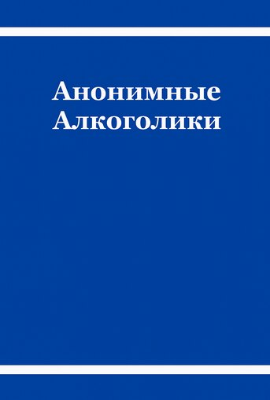
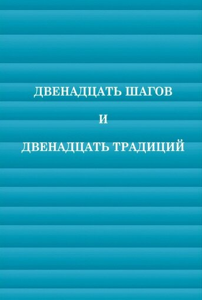
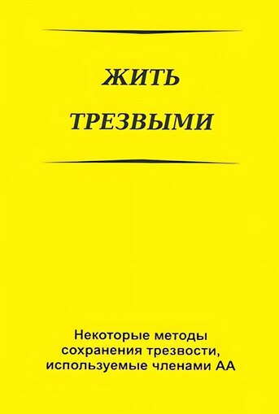
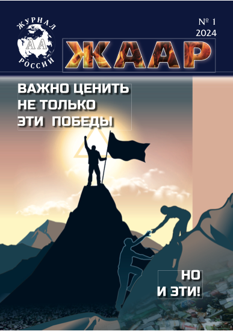

Единственное условие
Желание бросить пить. Каждый решает сам, подходит ли ему АА.
Содружество людей, которые делятся опытом, силами и надеждами, чтобы решать общую проблему и помогать другим.
Не уверены, подходит ли вам АА? Пройдите тест из 12 вопросов
Семинары, форумы и встречи содружества.
Сверено с AA25.ru 15 ноября 2026 года. Источники — новости AA25.ru и ПКСО АА Приморья. В календаре указаны даты мероприятий, а не даты публикаций.
Время владивостокское. Собрания длятся один час.
Открытые — для всех. Закрытые — для тех, у кого есть проблема с алкоголем и желание бросить пить.
Как проходит первое собраниеЕсли в вашем городе нет группы или сегодня нет собрания. Время указано по Владивостоку.
Не уверены, есть ли у вас проблема с алкоголем? Ответьте себе честно на 12 простых вопросов о том, как выпивка влияет на вашу жизнь. В конце увидите, что об этом говорят члены содружества.
Это не диагноз. Ответы никуда не отправляются и не сохраняются.
Пройти тестНисколько. Членских взносов нет. Группы содержат себя сами за счёт добровольных пожертвований участников.
Нет. Достаточно назвать имя, можно не своё. Списков участников никто не ведёт.
На открытое может прийти любой: родственник, друг, врач, студент. Закрытое собрание только для тех, кто сам хочет бросить пить.
Нет. Содружество не связано ни с какой религией, политическим движением, организацией или учреждением.
Для родственников и друзей есть отдельное содружество Ал-Анон. Группы Ал-Анон во Владивостоке.
Анонимные Алкоголики — содружество людей, которые делятся опытом, силами и надеждами, чтобы решать общую проблему и помогать другим.
Желание бросить пить. Каждый решает сам, подходит ли ему АА.
Группы содержат себя за счёт добровольных пожертвований участников.
Вы можете слушать и не обязаны рассказывать о себе. Участники бережно относятся к анонимности друг друга.
АА не связано с религиозными, политическими и другими организациями и учреждениями.
Участники делятся опытом выздоровления и знакомятся с программой «Двенадцать шагов». На собрании можно просто слушать. Более опытные участники могут поддержать новичка.
АА не ставит диагнозов, не назначает лечение, не предоставляет жильё и не ведёт списков участников. Содружество делится опытом взаимопомощи.
Книги о программе выздоровления и жизни в трезвости. Читайте в браузере или сохраняйте для себя.

Основной текст АА: программа выздоровления и личный опыт участников.
PDF · 1,1 МБ
О принципах программы и совместной жизни групп содружества.
PDF · 1 МБ
Практический опыт: как справляться с повседневными ситуациями без алкоголя.
PDF · 904 КБ
Подборка материалов журнала в одном выпуске.
№1 · 2024 год · 16 страниц
Публикации и материалы журнала в Telegram. Внешний источник, указанный на AA25.ru.
Канал журнала · TelegramИсточник файлов: AA25.ru — литература. Обложки книг: русскоязычное сообщество АА. PDF могут относиться к другому изданию. Для Telegram использована условная обложка раздела.
Если просмотр не поддерживается вашим браузером, откройте PDF отдельной вкладкой или скачайте файл.
Семинары, форумы, годовщины и встречи содружества. Выберите дату, чтобы посмотреть события.
Регулярные собрания групп — в расписании собраний.
Все события, о которых мы рассказывали, — от новых к старым.
Телефоны доверия по городам, почта и сайты содружества. На звонок ответит член содружества.
Семинары, форумы и документы регионального комитета.
Этот блок нужен только для презентации, на рабочем сайте его не будет.
| Сейчас | В прототипе |
|---|---|
| Расписание одним текстом | Фильтры по городу, дню и формату |
| Нужно самому искать сегодняшний день | Первый экран показывает ближайшие собрания |
| Онлайн-собрания по московскому времени | Время пересчитано на местное |
| Карта есть у части групп | Кнопка «Маршрут» у каждой группы |
| Телефоны на отдельной странице | Кнопка «Позвонить» в шапке на всех экранах |
| Нет раздела для новичка | Три шага и ответы на первые вопросы |